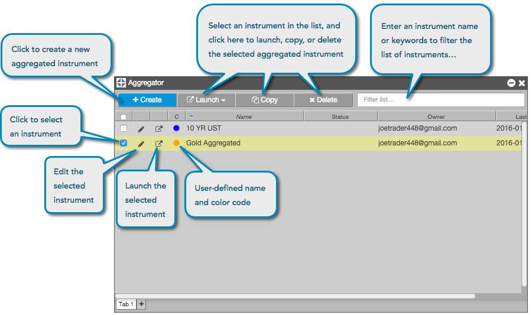

When you open an Aggregator widget, the Aggregator Manager dialog box appears. This screen is your interface for creating and managing aggregated instruments. You can create, launch, edit, copy, delete and search all of your aggregated instruments from this widget screen:
